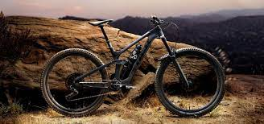

Kolo je plochá součást kruhového tvaru, která se může otáčet kolem svého středu. Může být volně otočné na pevné hřídeli, anebo pevně spojeno s otáčivou hřídelí. Součást spojující kolo a hřídel je náboj kola. Kolo je podstatnou součástí vozidel a dopravních zařízení, protože valivý odpor je podstatně nižší než smykové tření. Kola se však užívají i v mnoha jiných aplikacích, například jako mlýnská kola nebo kolotoče, jako součásti strojů, převodů a pohonů, jako kladky a setrvačníky nebo ozubená kola. Vynález kola, starý více než 7 tisíc let, je tak jedním z nejvýznamnějších v celých dějinách techniky.
| kolo | cena |
| Canyon | 140 542 |
| Propain | 50 000 - 210 000 |